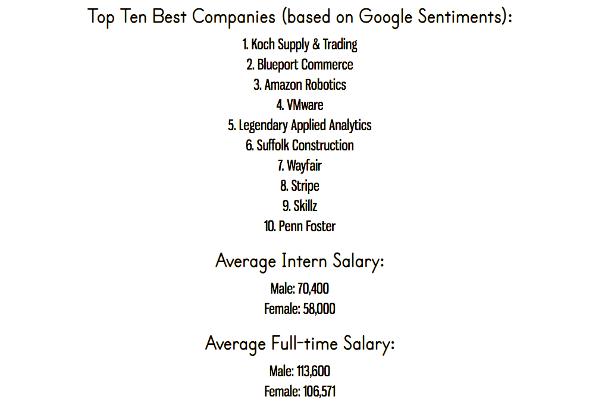
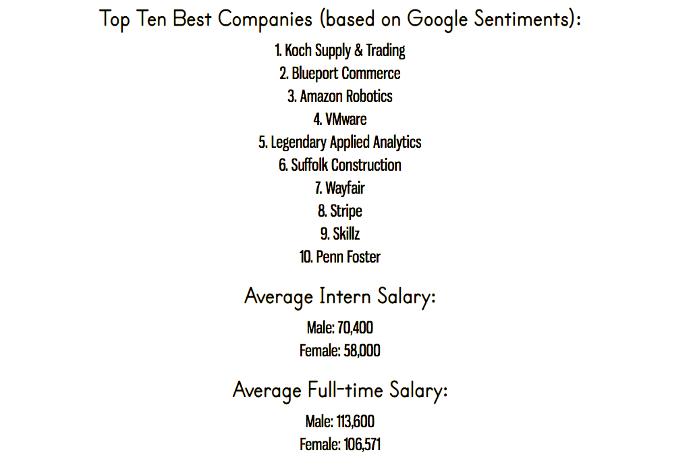

A Bookworm's Life
Currently, I'm working on building a data visualization of all the books I've read since graduating high school, based on a PostgreSQL database I created.
Meanwhile, here's a word cloud of the keywords I used to describe the books:
Created using https://www.wordclouds.com/.
Urban Beekeeping in Boston
Honey bees are on the decline worldwide, posing a threat to our ecosystems and global food supply. This map explores the potential for urban beekeeping in Boston.
Suitability was calculated using a Weighted Sum of variables including proximity to water, temperature, elevation, and potential for pollinators within the Boston city limits. The methodology was based on this study conducted in Italy.
Animation Creator
I used a Model-View-Controller & Decorator pattern to animate shapes using SVG in Java. This was my first Object-Oriented Design project, and I had a lot of fun building it!
Here's the repo in Github.
Imposter
I wrote and designed this website using HTML and CSS as part of my first hackathon at SheHacks Boston. Its aim was to be a more transparent, wage-gap-focused version of Glassdoor.
 

Data was gathered and anonymized from surveys taken during the hackathon.